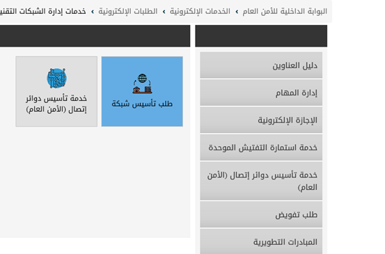
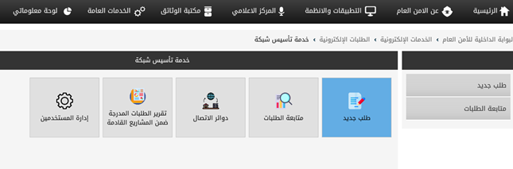
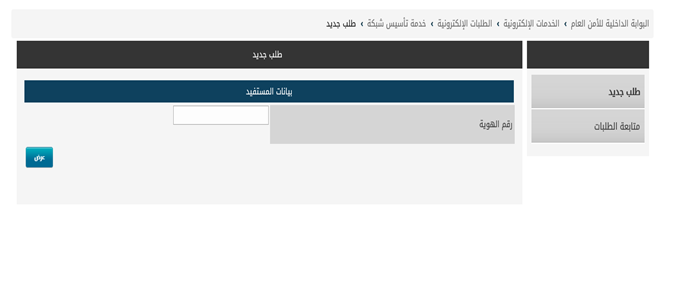
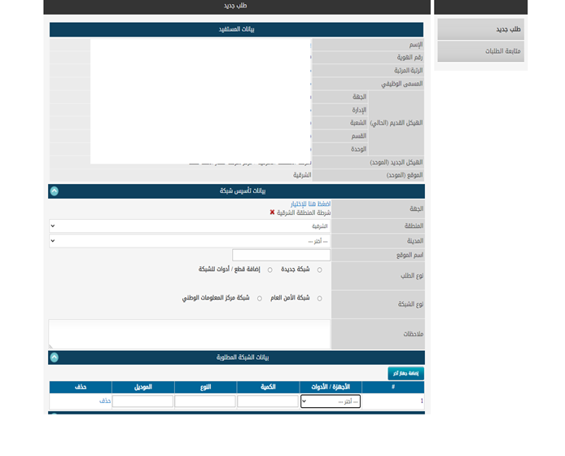
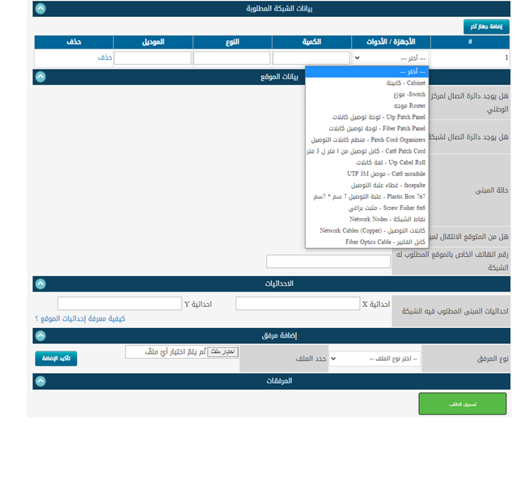

خطوات تأسيس موقع عبر البوابة
1- من خلال بوابة الأمن العام ( بالضغط على أيقونة خدمات إدارة الشبكات التقنية) وذلك لتأسيس دائرة أمن جديدة أو تمديد لمكتب جديد أو تأسيس شبكة مركز المعلومات الوطني

2- يتم اختيار ( طلب تأسيس شبكة )
3- اضغط طلب جديد لتأسيس الطلبات الجديدة أو متابعة الطلب في حالة تم رفع الطلب مسبقاً ولتتبع حالة الطلب
4- بعد الضغط على أيقونة طلب جديد يجب كتابة رقم هوية المستفيد التابع للجهة المستفيدة ( أما أن يكون مدير القسم ، أو مسؤول في قسم تقنية المعلومات التابع للجهة) ثم الضغط على زر عرض.
5- تعبئة الحقول
